Túnel de Vento de Bancada
Abstract
Humankind knew intuitively and for a long time that there were differences between moving objects in and outside the water. However, only in the beginning of the twentieth century, with the disclosure of the concept of boundary layer presented by the german physicist Ludwig Prandtl, that it was possible to explain the reasons of the difficulties related to moving an object in and outside of the water. Up to now the concept of boundary layer is a dominant one which is highly used in the scope of aerodynamics. In order to provide practical continuity to the abovementioned theory there are, nowadays, wind tunnels which can be seen as instruments for testing products with varied geometry and subject to different flow types. In addition, as a way of identifying the streamlines, the idea of adding smoke into these wind tunnels was introduced. In this sense, the studies related to ways of creating smoke and inducting outflow in wind tunnels are of great relevance for engineering. In this regard, the present dissertation aims to assemble a bench in order to observe streamlines in air flows utilizing smoke. This duty was accomplished using a exploratory research methodology. Besides that, tests were conducted with a commercial fog machine in order to calculate Reynold’s number of some of the obtained results. Finally, it was possible to conclude that glycerin is a reasonable material for smoke generation and that it is more advantageous to buy a commercial smoke machine than produce one to visualize streaklines in air flows in a wind tunnel.
Tipos de Túneis de Vento
Segundo J. B. Barlow, W. H. Rae, Jr, A. Pope (1999, p.25), existem dois tipos principais de túneis de vento: de circuito aberto e de circuito fechado. Nos túneis de circuito aberto o fluido escoando segue um caminho predominantemente reto até o ponto onde estão sendo realizados os testes, após esse ponto, geralmente, existe uma região responsável por concentrar o fluido e outro mecanismo que induz o fluxo para fora do túnel, como, por exemplo, um exaustor. Nesse modelo o mesmo fluxo 15 de ar não irá retornar para o início do túnel e é dispensado. Além disso, a área de testes pode ser de dois tipos, novamente, aberta e fechada. Nesses casos, aberta significa que é possível ver a área de testes mesmo à distância e de diferentes pontos, como no Tipo Eiffel da Figura 1, enquanto fechado significa que a área de testes é predominantemente fechada. Os túneis de circuito fechado funcionam de maneira similar ao aberto, porém possuem uma estrutura capaz de fazer com o que o mesmo fluido ao sair do túnel retorne ao seu início, gerando uma re-circulação. Um exemplo desse tipo pode ser visto na Figura 2.
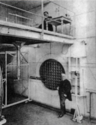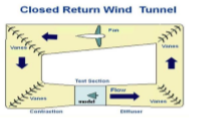
Visualização de Escoamentos
De acordo com Thomas J. Mueller (1980, p.32-34) e Christoph Hoffmann (2012), um dos primeiros relatos de visualização de fluxo se deu com o físico e químico Dr. Ludwig Mach de Viena em 1893. O túnel de vento utilizado por ele tinha uma seção transversal de 180 milímetros por 250 milímetros e produzia um escoamento da ordem de 10 metros por segundo. Além disso, ele utilizava uma malha de metal para diminuir a turbulência do fluxo que entrava no túnel. Esse túnel tinha área de testes do tipo fechada e contava com um vidro em um dos lados para permitir a visualização do fluxo e os outros lados eram pretos. O fluxo foi fotografado e observado com o uso de fios de seda, fumaça de cigarro e partículas incandescentes de ferro. Na França, seis anos depois, o cientista E. J. Marey, que já era reconhecido por seu trabalho fotografando objetos em movimento, decidiu fotografar o ar em movimento. Esse cientista construiu um túnel de vento vertical conforme Figura 3. A área de seção escolhida foi de 200 milímetros por 300 milímetros. Tanto a frente como dois dos lados da área de testes foram feitos com vidro, sendo que o fundo foi feito com veludo preto. O ar era tragado por meio de uma pequena ventoinha de sucção após passar por uma gaze de seda responsável por diminuir a turbulência do fluxo, auxiliando nessa tarefa existiam pequenos tubos após a gaze. A fumaça nesse caso era obtida de pedaços de madeira. Os resultados obtidos foram muito bons para a época e podem ser vistos na Figura 4. Segundo Thomas J. Mueller (1980, p.32), após esse período com o advento da primeira guerra mundial houve pouca divulgação sobre os túneis de fumaça. Ainda assim, até por volta de 1940 as fotografias obtidas por outros cientistas não tinham a mesma qualidade das obtidas por Marey em 1899. Nesse período de quase 40 anos a maioria dos túneis eram para observaçao de escoamentos em duas dimensões e a fumaça gerada a partir de diversos materiais, sendo que os mais populares eram madeira podre e tetracloreto de titânio.
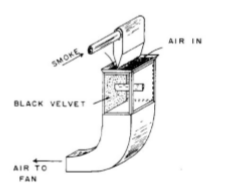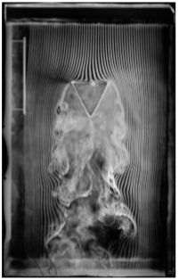
Camada Limite
Imaginando-se um escoamento de fluido a uma velocidade qualquer diferente de zero, sabe-se que a medida em que esse escoamento passa por obstáculos, tais como superfícies sólidas e impermeáveis, sua velocidade é reduzida. Na Figura 11 abaixo é possível ver a região de influência formada pelo objeto durante um escoamento de fluido.
Essa redução é proporcional à distância em relação à superfície, sendo maior quanto mais próxima do objeto contornado e suficientemente grande no contato direto entre fluxo e superfície para fazer com o que o fluido fique parado nesse ponto. A redução de velocidade ocorre devido ao atrito interno do fluido chamado de viscosidade que é uma propriedade dos fluidos. Esse fenômeno, redução de velocidade à zero na superfície, é conhecido como condição de não-deslizamento. Na Figura 12 é possível ver esse comportamento de maneira qualitativa para o caso 27 de uma velocidade de fluido inicial diferente de zero e seu comportamento ao escoar sobre uma placa plana. Os vetores ilustrados nessa figura juntos formam o perfil de velocidade desse escoamento. Naturalmente, a medida em que nos afastamos da placa a velocidade é menos influenciada até o ponto onde não existe mais diferença entre a velocidade próxima da superfície e a mais afastada. A região em que existe influência na velocidade pela presença da superfície é chamada de camada limite.
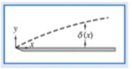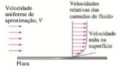
Número de Reynolds
Conforme Fox, Mcdonald e Pritchard (2014, p.66), existem dois tipos de escoamentos, eles são denominados laminar e turbulento. Como os próprios nomes sugerem, o primeiro ocorre de maneira mais ordenada de maneira semelhante a lâminas, enquanto o segundo ocorre sem um padrão fixo. Existe uma terceira categoria de escoamento chamada de em transição que une características ora de escoamentos laminares e ora de escoamentos turbulentos. Na prática a maioria dos escoamentos ocorre de maneira turbulenta e os laminares são mais comuns para fluidos com viscosidade elevada e que escoam em tubos ou passagens estreitas. A Figura 17 exemplifica esses tipos de escoamentos.
Com o objetivo de se prever o tipo de escoamento, o engenheiro britânico Osborn Reynolds (1842-1912), nos anos de 1880, realizou experimentos e concluiu que o tipo de escoamento em tubos poderia ser previsto com base em valores de propriedades como, por exemplo, viscosidade. A equação que relacionava todos esses parâmetros foi igualada a um número adimensional conhecido como número de Reynolds (Re) e serve de base até os dias de hoje para se calcular o regime de escoamento dos fluidos.
Após diversos testes, Reynolds percebeu que o regime de escoamento depende primordialmente da relação entre as Forças de Inércia e as Forças Viscosas do fluido e relacionou esses dois parâmetros:
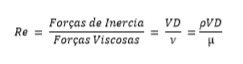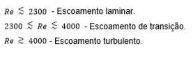
Escoamento em Cilindros Circulares
Conforme Çengel, Y. A.e Cimbala, J. M. (2007, p.510), o número de Reynolds crítico em relação à camada limite de cilindros circulares é de aproximadamente 200.000. Nesse sentido, números menores ou iguais a esse descrevem camadas limites laminares e maiores turbulentos. A Tabela 1 descreve as características visuais dos escoamentos em torno de cilindros circulares de acordo com o número de Reynolds. Essa tabela foi retirada do livro de K. Gersten e H. Schlichting (2000, p.22), mas foi adaptada pelo autor deste trabalho.
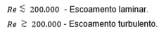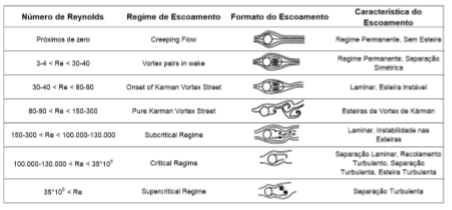
Resultados
Após diversas montagens, chegou-se a uma que produziu melhores resultados, ela pode ser vista na figura abaixo.
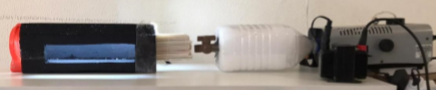A próxima figura mostra os resultados obtidos com uma montagem similar a da figura anterior, a única diferença sendo a válvula final de passagem da fumaça que na imagem anterior é uma de água fria e nessa uma válvula de gás.
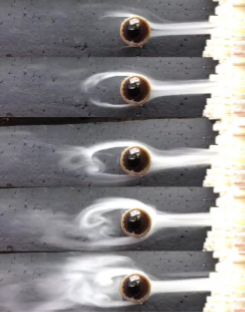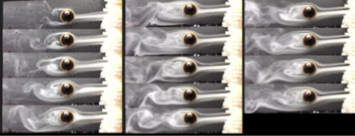
Número de Reynolds encontrado
As figuras e tabelas abaixo mostram os número de Reynolds aproximados que foram encontrados no trabalho. Além disso, mostram a tabela com os valores descritos na literatura e os resultados visuais esperados de acordo com cada valor. Ao final é mostrada uma figura com o resultado do trabalho e o possivelmente descrito de acordo com o Re.
Foram utilizadas duas técnicas para o cálculo do Re, por isso as figuras descrevem duas tabelas diferentes.
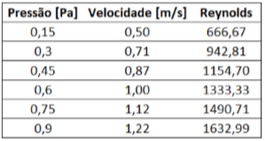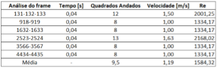
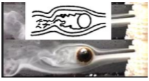